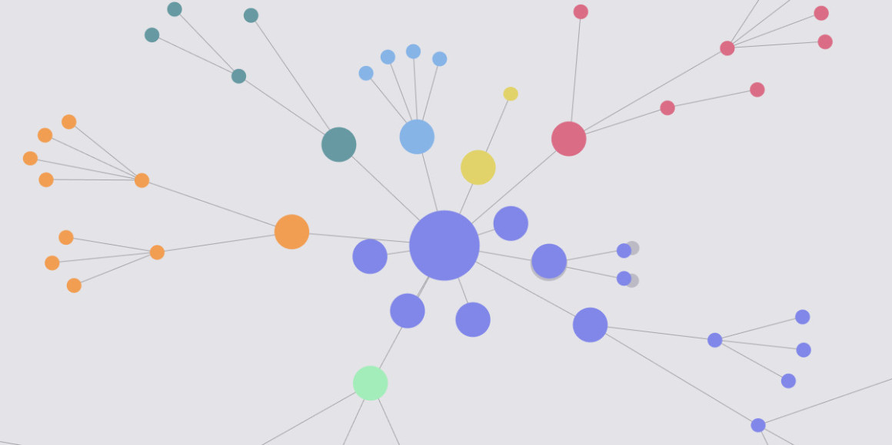

01 / Executive view
AI meeting tools create a new control surface.
When employees invite personal or unapproved notetakers, sensitive audio, transcripts, and summaries can move beyond the organization’s approved technology and governance boundaries.
Financial servicesHealthcareGovernment